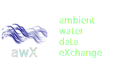
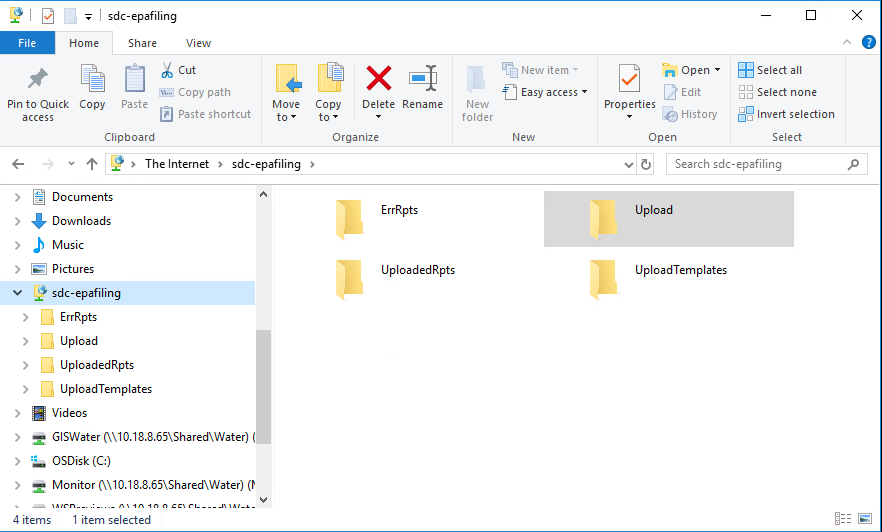
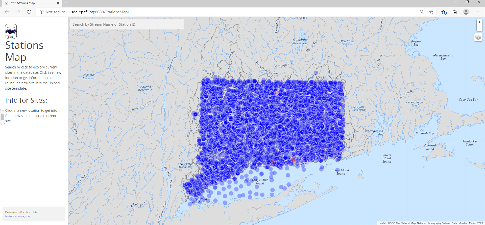
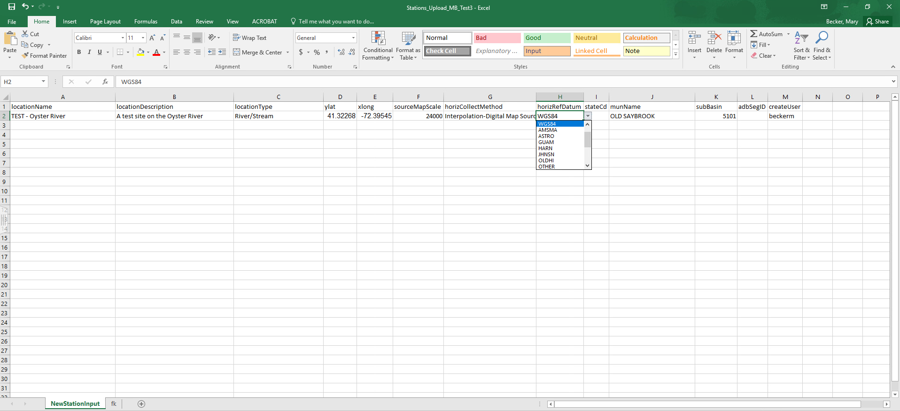
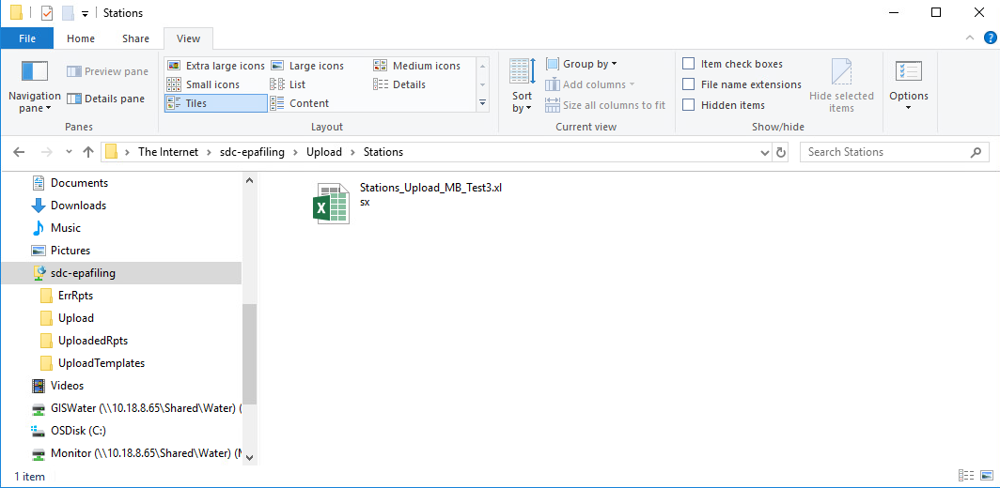
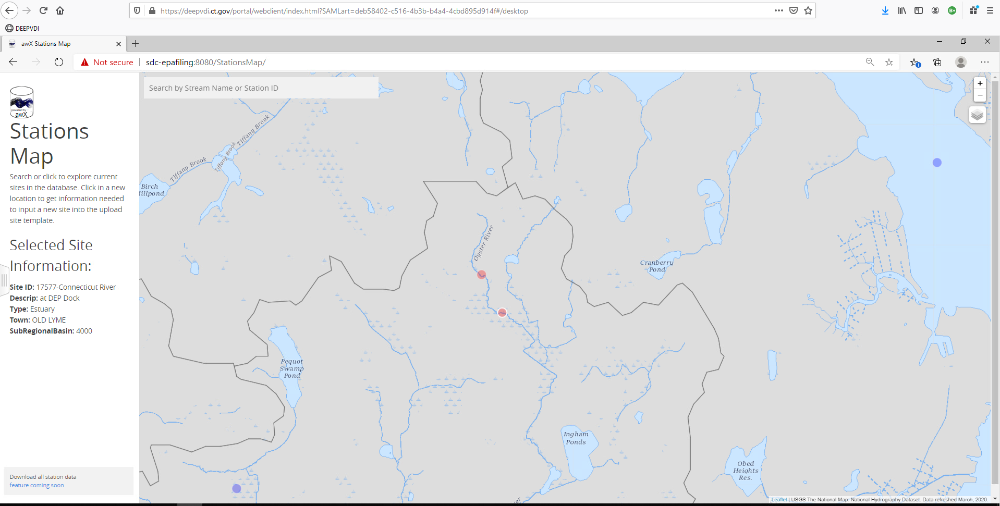

Beta ver. - Upload Stations Workflow
Map to
ftp://spc-epafiling/Upload

Check for existing sites
Access the stations web service 
Get and Fill in Excel Upload Template

Place template in
ftp://spc-epafiling/Upload/Stations

Check for errors report and map
